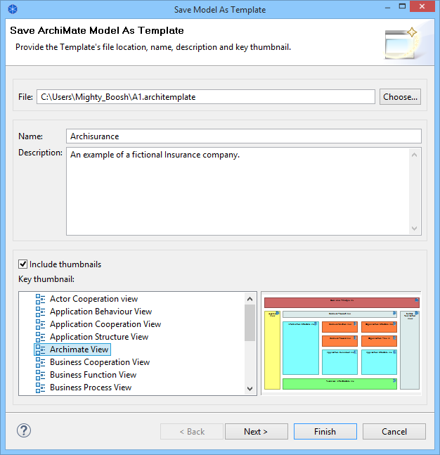
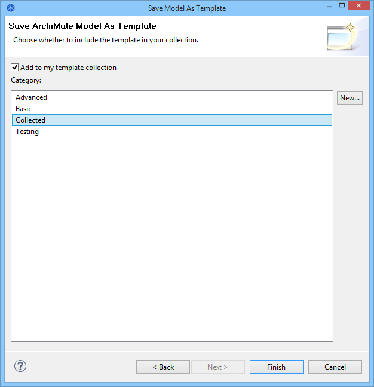

Creating a New Template
To create a new template follow these steps:
- Create a new Archi model or open an existing model that you have created and edit it so that it as you want the template to be.
- Make sure the model you wish to save as a template is open and selected in the Model Tree.
- Choose the "File->Save As Template..." menu item from the main menu. A wizard will open:

- In the wizard, provide a file name for the location for the template file, a name for the template (this is different than the name of the model) and a description.
- Select whether you want to include thumbnail images of the Views in the model template. If you choose to include thumbnails of the Views in the template choose which of the images will be the "key" thumbnail. This will be the first thumbnail image displayed in the "New Model from Template" wizard.
- Click "Next" to move on to the next page of the wizard:

- Choose whether you wish to add the template to your collection. Your collection of templates is a list sorted into categories that will be displayed in the "New Model from Template" wizard. If there are no categories available to choose from you can create a new category by clicking on the "New..." button in the wizard.
- Press "Finish".
The template will be saved on your file system with an "*.architemplate" extension. You can share this template with other Archi users if you like.